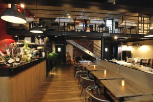
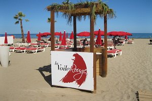
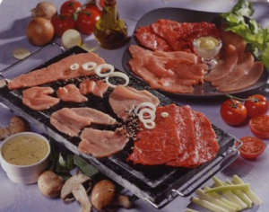
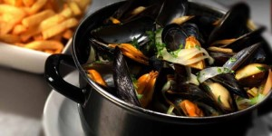

| Experiences↗📝 | |
 |
Restaurant Brasserie (fait maison) Le Lion d'Or Lalbenque (46) 2014/2020 Cuisinier |
|  |
Restaurant Brasserie (fait maison) La Cantine de Deauville Deauville (14) 2013 Cuisinier |
|
Restaurant Traditionnel (fait maison) L'Epicurien Caussade (82) 2012 Cuisinier |
|
|  |
Restaurant Traditionnel / Brasserie sur Plage (fait maison) La Voile Rouge Narbonne-Plage (11) 2011 Cuisinier |
|  |
Restaurant Traditionnel / Brasserie (fait maison) Dai Baroni Barcarès (66) 2010 Cuisinier |
|  |
Restaurant Traditionnel / Brasserie L'Embarquement Barcarès (66) 2010 Cuisinier |